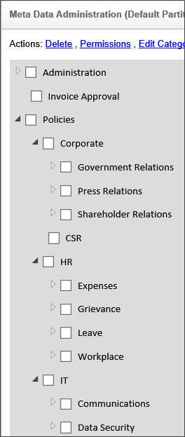
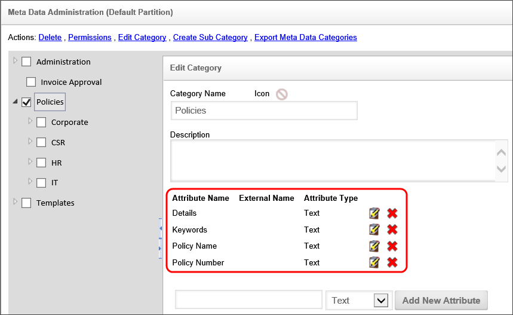
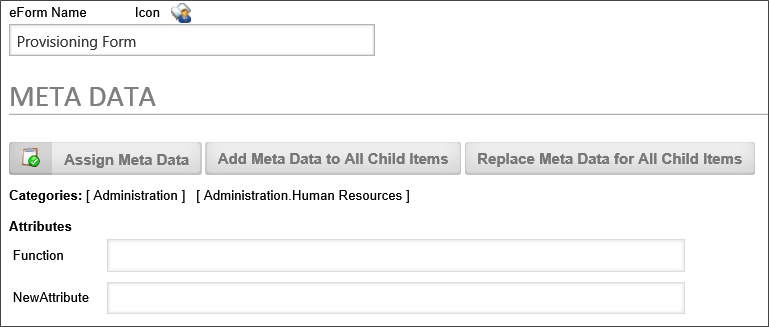
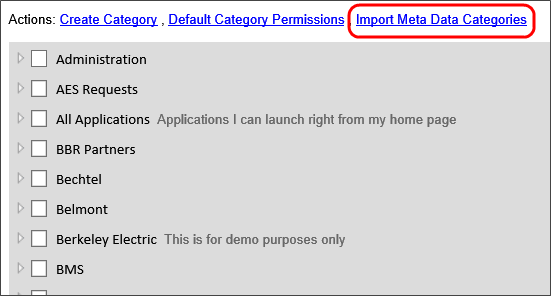
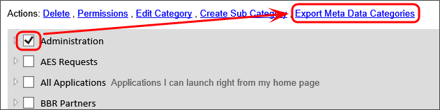

Meta Data
Meta Data is loosely defined as “data about data.” In the context used by Process Director, it could be more accurately described as “data about objects.”
Meta Data, for example, is used by libraries in order to classify content of archived information. If you wanted to know when the book was received by the library, any summaries of the book by critics, the last time it was checked out… that’s a good description of metadata. Another way to handle metadata would just be including more fields on a form, but you may see that metadata categories described in process director can be applied to any Form definition, so that you could search for documents or Forms from different processes without having to describe very complicated knowledge view conditional statements.
Categorization is key component to the Knowledge Management (KM) features in the Workflow Server. KM has been defined as the collection of processes or information that governs the creation, dissemination, and utilization of knowledge.
At the core of Process Director is a management system that contains documents, Forms, images, web pages and scanned image – all of your digital content. This content can be organized by Process Timeline, user, department, or any other approach. Process Director allows this content to be categorized. A classification mechanism provides a powerful, consistent way to categorize content according to how your organization wants to make information available to your community of users.
Category Tree / Schema #
The first step, and the most important, in classifying your content is to define your category schema (i.e. taxonomy). This schema defines a hierarchical tree structure of categories. Each category can have any number of attributes which allow custom information to be associated with the category when it is assigned to an object in the Process Director database. This tree is the foundation for categorizing (or “tagging”) objects and defines how information is organized, processed and distributed. The category tree, or any branch within the tree, should represent how you want data organized in your enterprise.
Categories
You must have access to the Meta Data Admin button. You can add the button to your workspace if it’s not already available to you. Select the Meta Data Admin entry in the top navigation bar.
This will display the Meta Data administrative functions available to you. Ensure that you select the partition you are working on and click on the Meta Data Administration link. This displays the complete category tree. Click on the “+” (plus sign) to expand a branch of the tree. The sub-categories allow a more granular level of classification. To modify, delete or create a sub-category, select the category in the tree and choose the appropriate hotlink.
If a user assigns a sub-category to an object, the object will also inherit all of the parent categories. For example, in the image below, the category Policies contains the categories Corporate, CSR, HR, and IT. If a user assigns an object to the category Corporate, the object will also be assigned to Policies because the category Corporate is a sub-category of Policies.

Category Attributes
While viewing the category tree, click on a category name to display or modify the attributes. Any category or sub-category may contain attributes. Attributes allow custom user data to be associated with a category. Attributes have a name and a type. The attribute types include Text, Number, Yes/No, Currency, and Date fields. The attribute type defines how the information is stored and is used for conditional processing inside a workflow or a Knowledge View (e.g. less than and greater than comparisons, contains certain text, etc.).
If a user assigns a category to an object, the attributes allow custom data to be associated with the object.

Adding / Removing Attributes
To add a new attribute under a category, fill in the Attribute Name, select the type from the dropdown, and press the “Add New Attribute” button. This will add the attribute to the list above. To remove an attribute click on the  icon next to the attribute name. Be careful when removing attributes because it will remove all values in the database where this category is assigned to an object.
icon next to the attribute name. Be careful when removing attributes because it will remove all values in the database where this category is assigned to an object.
How Objects are Categorized #
Various types of content exist within Process Director and are generically referred to as objects. Business users have an easy method to categorize these objects in the Process Director database when they are created or updated. When a user adds or modifies an object in the database, content categorization data can be selected, causing the item to be automatically associated with the appropriate end-user classifications. This categorization can occur manually, automatically, and/or programmatically.
User Assignment
Categories can be assigned by any user with Modify permission to an object. This is done through the Meta Data button on the objects property pages. As categories are assigned to an object, the associated category attributes are displayed with an input field allowing variable data to be entered.

Folder Categorization
Categories and attributes can be set in a folder’s properties. This will automatically categorize any new object that is created directly beneath that folder. When categories are inherited from the parent folder settings, this will not replace or overwrite the existing categories of an object or folder below, instead the categories will be added to the existing category assignments. Additionally, if an object below already has the same category attributes as the parent folder, the attributes will not be overwritten by the parent folder settings.
Folder categories can also be replicated to all children objects contained below the folder. There are two replication options available as hotlinks on the folders property page:
Add Meta Data to All Child Items – This will add the folders categories and attributes to all objects below this folder. It will not overwrite any existing categories or attributes already assigned to those objects.
Replace Meta Data for All Child Items – This will remove the categories and attributes for all objects beneath this folder and replace them with the folders settings.
Both of these replication settings will only apply to objects beneath the folder that to which the user has Modify permission.
Workflow Definition / Form Definition Categorization
Workflow Definitions and Form Definitions also have the ability to apply Meta Data to the items beneath them (i.e. children). New workflow instances and Form instances will inherit the Meta Data from their parent definition. Meta data can be applied to all child items for a workflow definition or Form definition. When this is performed on a workflow definition, it will set the Meta Data for all workflow instances AND all items contained within those workflow packages.
Inheriting Workflow Meta Data #
Objects that are added to a running workflow instance will inherit the workflow categories and attributes. This will occur only if an object is contained within the workflow, for example with a Form Actions workflow task. If a workflow is run against an object in the Content List (e.g. document), it will not inherit the workflow Meta Data.
From A Template
Categories and attributes can be assigned to an object template (document, Form). If that template is specified in a Form Actions workflow task, the associated category settings for the template will be used for the new object that is created. The user participating in the Form Actions step can optionally modify the category settings, if they have Modify permission to the object in the workflow. To allow a user that does not have Modify permission to ability to set categories, they must be assigned to a Meta Data workflow task.
Programmatically
Categories and attributes can be assigned to an object programmatically through Process Director APIs.
External Properties
Categories can be assigned to an object using information from an external source. The product can automatically set categories using information from the following external sources:
Categories and attributes can be set based on form field values on a Form;
Document imaging/scanning solutions that index scanned documents.
Document importing with associated Meta Data XML files. Refer to the section named Importing Documents from a File System in this document.
Importing / Exporting Categories & Attributes #
When items in the Content List are exported, they will automatically export any category or attribute definitions that are referenced (e.g. assigned as Meta Data). When the items are imported to another server, the categories and attributes will be updated or created.
For users of Process Director v4.05 and higher, Meta Data schemas can be exported and imported from the Meta Data Admin screen. This enables you to export the category and attribute definitions and import them onto another system as an XML file.
Category permissions are also enabled for v4.05 and higher, allowing control over who can modify the schema or use them for assignments. A partition admin has full permissions, but other users may not. The addition of permissions means that a user may not see certain categories or sub-categories based on their permission level, both in the meta data schema builder and in the assignment of categories to objects.
Import and export functions can now be accessed from the action links at the top of the Meta Data Admin screen. The Import Meta Data Categories action link is available as soon as you open the Meta Data Admin screen.

The Export Meta Data Categories action link will appear when you select a Meta Data Category by clicking the check box adjacent to one or more categories.

A couple of things to remember when exporting/importing:
- The Export will not remove any attributes, but it will display a warning message indicating that attributes existed on the database but not in the XML
- The Exports takes the entire category tree and all selected categories in other tree branches.
- The import can only be performed at the root level of the Meta Data Admin, and the path cannot change, so if you export something and import it to another system, the parent path will be exactly the same, starting at the root.